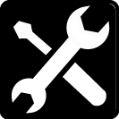
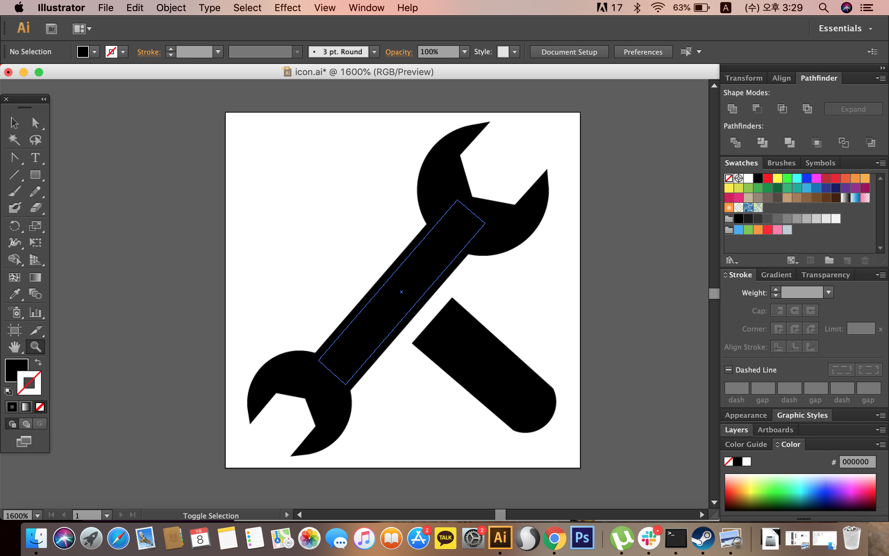
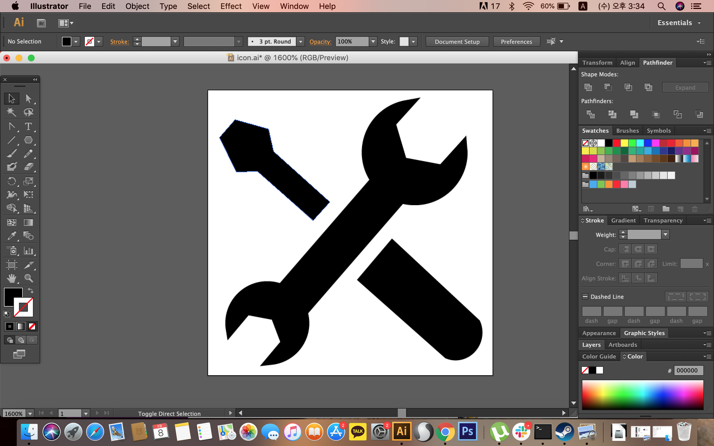
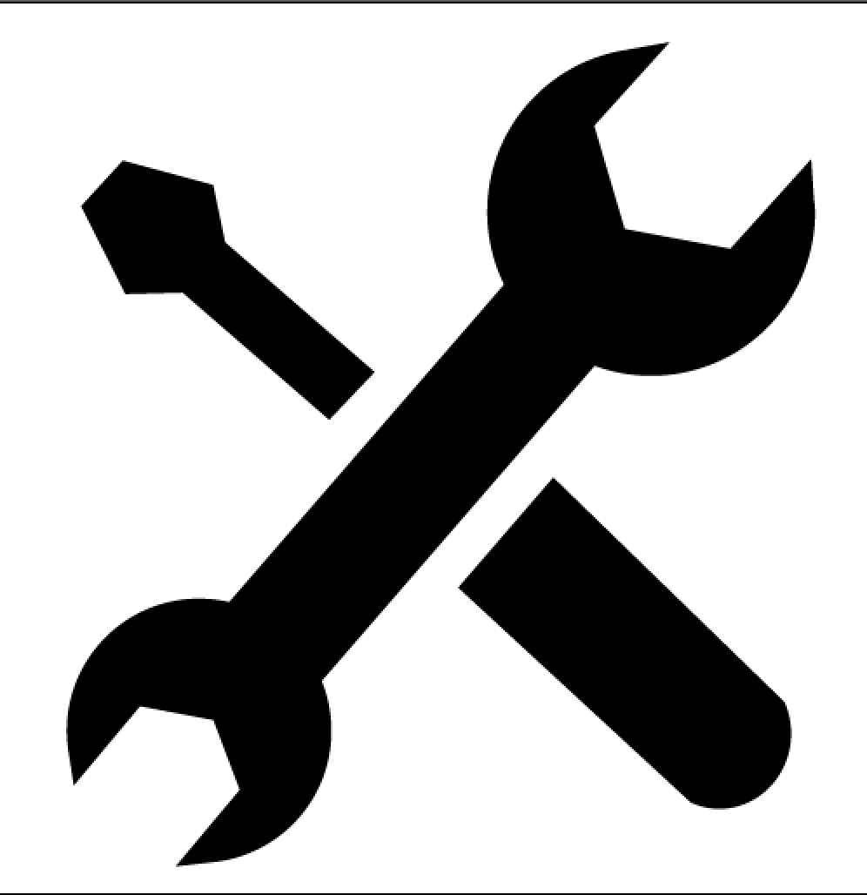

Illustraton_Work
TAEHONG'sWEB
ICON-Tools

イラレを使用してアイコンを作ってみた。道具のToolsを製作。
プロセス
STEP.1

長方形、半円、円、六角形を作り、pathfinderで円の中に六角形の穴を開けて、長方形に半円をつけ、
Group機能で一つに結びつけた。
STEP.2

六角形と長方形を作り、六角形を長く調整して長方形とGroup。
STEP.3

全部Groupしてから保存。
STEP.4
アイコンの色を白に変えて、長方形を作り、角の尖っている部分を丸く調整し、背景を黒に変えた。作った背景の長方形はアイコンの後ろに配置してGroupして終わり。